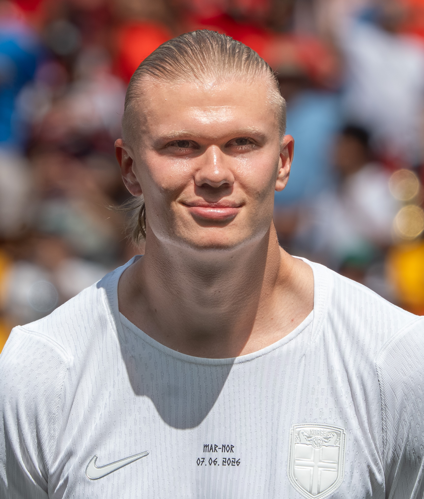

Erling Haaland "El Androide"
Noruego (21 de Julio de 2000)
- Ganador de la Bota de Oro de Europa (22/23 con 36 goles)
- Campeón de la UEFA Champions League (22/23)
- Campeón de la Premier League (22/23 y 23/24)
- Ganador del Trofeo Gerd Müller / Delantero del Año (2023)
- Récord histórico de más goles en una sola temporada de Premier League (36 goles)
"El Androide". Es el delantero centro referente del fútbol moderno. Famoso por su potencia física descomunal, velocidad explosiva y un instinto goleador insaciable dentro del área, ha marcado un impacto inmediato con el Manchester City y la selección de Noruega. Conquistó un histórico triplete en su primera temporada en Inglaterra y rompió el récord absoluto de goles en una sola campaña de la Premier League, estableciéndose rápidamente como uno de los artilleros más temibles de la época actual.

Trayectoria y Traspasos
Molde FK
Traspaso: Traspaso nacional
Su despegue goleador bajo la dirección de Ole Gunnar Solskjær antes de dar el salto a Europa.Red Bull Salzburgo
Traspaso: Fichaje internacional
Su irrupción en la élite europea y en la Champions League con un promedio goleador devastador.Borussia Dortmund
Traspaso: Fichaje estrella
Consolidación como uno de los mejores delanteros del mundo, ganando la Copa de Alemania.Manchester City
Traspaso: Premier League
Etapa dorada donde rompió récords de goles y conquistó el triplete (Champions, Premier y FA Cup).Estadísticas
Eficiencia e Impacto en la Premier League
Erling Haaland revolucionó el fútbol inglés desde su llegada al Manchester City. Ostenta el récord de más goles anotados en una sola temporada de Premier League tras registrar 36 tantos en su campaña de debut (2022/23). Además, se convirtió en el jugador más rápido en la historia de la liga en alcanzar los 75 y los 100 goles, superando las marcas de leyendas como Alan Shearer y Harry Kane. En total suma 112 goles en tan solo 132 partidos disputados en el torneo inglés.Registro Goleador Total y Títulos
En su primera temporada con el club de Mánchester, la estrella noruega registró 52 goles en todas las competiciones, liderando al equipo a la conquista de un histórico Triplete: Champions League, Premier League y FA Cup. Mantiene una media goleadora cercana al gol por partido en todas las competencias europeas y ligas donde ha jugado, acumulando también 86 goles en 89 partidos en su etapa previa con el Borussia Dortmund.Dominio Internacional con Noruega
A nivel de selecciones, Haaland es el referente absoluto de Noruega. Es uno de los futbolistas más rápidos de la historia moderna en alcanzar los 50 goles con su país. Durante el Mundial de la FIFA 2026, guio a la selección noruega hasta los cuartos de final —la mejor actuación histórica del país en una Copa del Mundo— sumando 7 anotaciones a lo largo del torneo.Dato Curioso
Un muro andante
Durante un partido entre el Bayern Munich y Borussia Dortmund, el defensor Joshua Kimmich hace una entrada en el área a Haaland pero termina lesionándose sólo, mientras el Androide sigue la jugada, inmutado ante la marca.
Adjunto evidencia: Captado en cámara